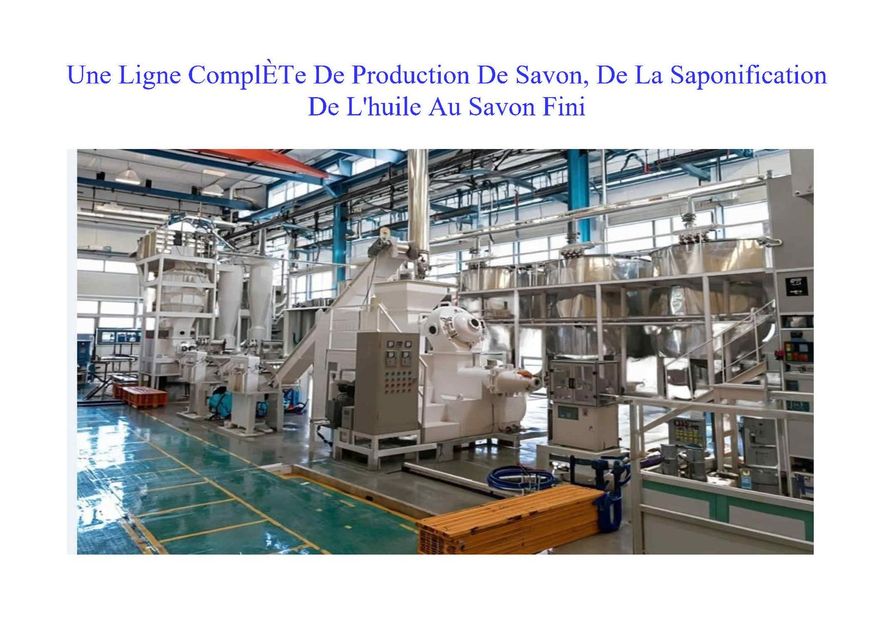
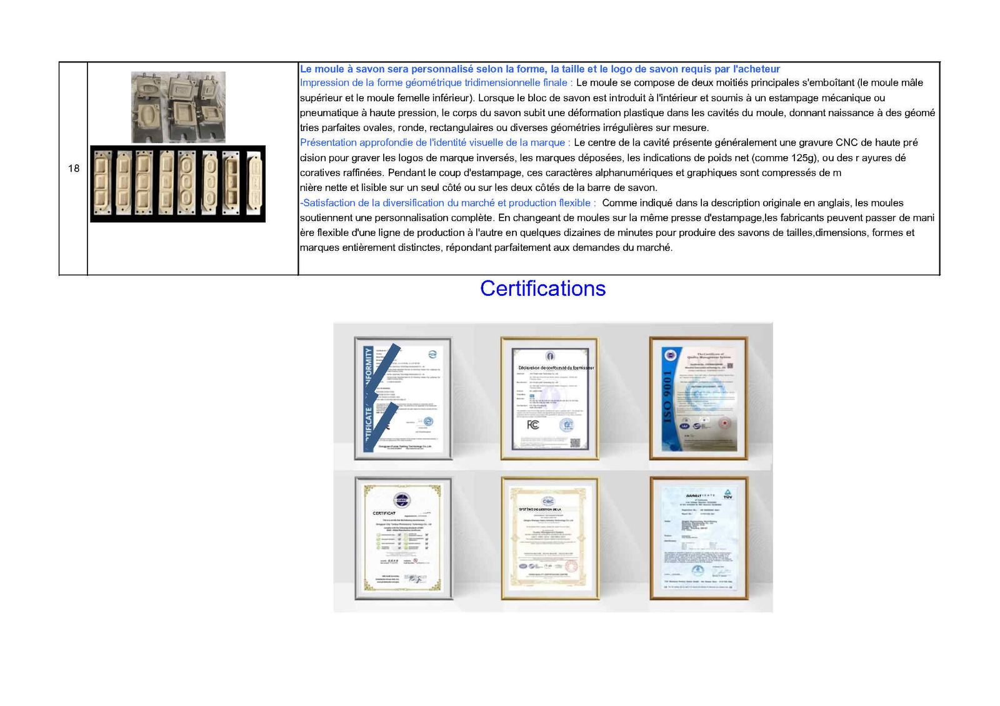
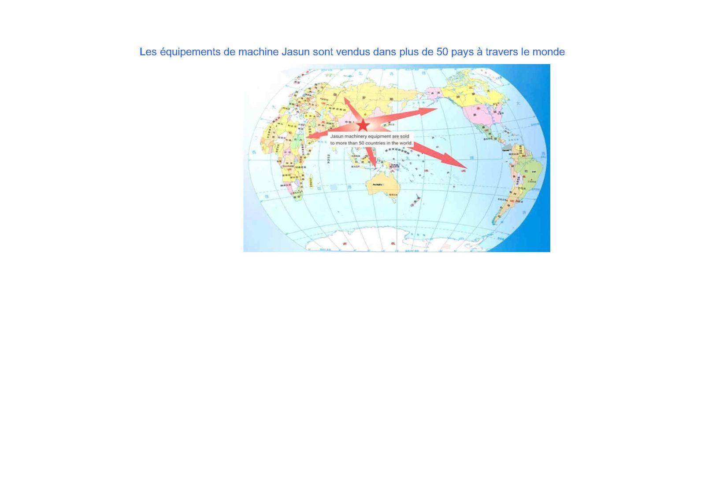

Fabricant Fiable de Machines Industrielles de Savonnerie
Fondée en 2005, Kaifeng Jasun Industry Co., Ltd. est spécialisée dans les machines professionnelles de fabrication de savon et les lignes de production complètes. Avec plus de deux décennies d'expertise industrielle, nous nous engageons à fournir aux savonneries mondiales des équipements de traitement de haute performance, de la saponification à l'emballage final du savon. Nos machines sont exportées dans plus de 50 pays et régions, y compris des pays développés comme les États-Unis.
Le processus de fabrication de savon à partir d'huiles végétales ou de graisses animales et de soude caustique
L'ensemble du processus se divise en deux étapes principales.
La première étape (Partie A) comprend la saponification et le séchage pour produire des copeaux de savon. Il s'agit de la réaction de saponification entre les huiles végétales ou graisses animales et la soude caustique pour former une base de savon. Cette base est ensuite traitée dans un système de séchage sous vide et une granulateur (ou extrudeuse) qui la transforme en copeaux de savon.
La seconde étape (Partie B) consiste à transformer les copeaux de savon en savon fini. Les copeaux sont introduits dans un mélangeur où ils sont associés à du parfum et des pigments. Le mélange est ensuite alimenté dans une boudineuse d'affinage (affineuse). L'objectif principal est de mélanger, homogénéiser et broyer soigneusement la matière savonneuse. Ensuite, les copeaux passent dans un broyeur à trois cylindres, où ils sont réduits en fines feuilles de savon. Ces feuilles sont transférées par tapis roulant vers une boudineuse sous vide (à double vis ou à vis unique), où elles sont à nouveau affinées et extrudées en continu pour former une longue barre de savon à la forme souhaitée. Cette barre est ensuite découpée et façonnée en pains individuels aux dimensions requises à l'aide d'une machine de découpe automatique ou d'une presse à savon (estampage/marquage). Enfin, les pains de savon finis sont emballés par une machine d'emballage (type « flow-pack », encartonneuse ou emballeuse papier).
Une Ligne Completa De Production De Savon, De La Saponification De L'huile Au Savon Fini

Diagramme de flux avec des nouilles de savon pour fabriquer du savon
- Mixer – mélange uniformément les nouilles de savon avec parfum, pigments, huiles essentielles et additifs.
- Refiner – pré-raffine la masse de savon mélangée.
- Three roll mill – broie le savon pour la douceur et une couleur et un parfum uniformes.
- Duplex plodder (vide) – extrude le savon raffiné en un barreau continu et dense.
- Cutter – coupe le long barreau en plots uniformes.
- Stamper – estampe les plots en pains finis avec logos et formes.
- Packing machine – emballe le savon fini pour la vente.
Partie A :
Système de saponification et de séchage sous vide --- Équipement de production de nouilles de savon
| 1 |  | Système de saponification et de séchage sous vide (petite / moyenne échelle)Système intégré de saponification et de séchage sous vide à petite et moyenne échelle à partir de différentes huiles et de soude caustique pour produire des nouilles de savon. Capacité : |
| 2 |  | Système de saponification et de séchage sous vide (grande échelle)Grand système de saponification et de séchage sous vide à partir de différentes huiles et de soude caustique pour produire des nouilles de savon. Capacité : |
Partie B :
Mélange, broyage, extrusion, équipement de moulage et machine d’emballage de savon --- Ligne de production de savon
- mixer
- three roll mill
- soap plodder
- soap cutter
- soap stamper
- soap packing machine
Équipements de mélange, raffinage et broyage
| 3 |  | Mixeur de savon industrielFonctions principales et principe de fonctionnement : Cet équipement est une pièce essentielle de machinerie dans la phase de front-end de la ligne de production de savon. Il est principalement utilisé pour mélanger de manière très efficace et uniforme des nouilles de savon avec divers additifs, such as des parfums, des pigments, des huiles essentielles et d'autres ingrédients auxiliaires. Le mélangeur est équipé de lames à vis internes. Pendant le fonctionnement, le moteur entraîne l'arbre principal à tourner, utilisant le mouvement mécanique de la vis pour soulever, retourner et disperser continuellement les nouilles de savon depuis le bas. Cette action de cisaillement et de convection puissante permet aux parfums liquides et aux pigments solides de pénétrer rapidement et de recouvrir uniformément les nouilles de savon en peu de temps. Par conséquent, il établit une base de savon lisse, raffinée et de couleur uniforme pour les processus de moulage et de pétrissage (extrusion) qui suivent. Caractéristiques structurelles : |
| 4 |  | Affineur de pétrissageApplications : Caractéristiques clés : |
| 5 |  | Broyeur à trois rouleauxTransformation et modification des cristaux : Après le mélange, la cristallisation interne du savon peut être inégale. Le broyeur à trois rouleaux utilise une extrusion à haute pression pour forcer la transformation des cristaux de savon, formant une structure cristalline avec une meilleure ductilité et résilience. Cela garantit que le savon final est moins susceptible de se fissurer et ne devient pas facilement pâteux lorsqu'il est trempé dans l'eau. |
Boudineuse sous vide et estampage
| 6 |  | Plodder à savon à vide à double étage (ou extrudeuse à savon à vide)Dégazage à vide haute efficacité : Le matériau de savon subit une extraction complète de l'air et des bulles dans une chambre à vide scellée. Cela rend la structure interne du savon exceptionnellement dense et compacte, empêchant efficacement les cavités internes ou les fissures tout en rendant la barre de savon finale plus durable et moins sujette à devenir molle lorsqu'elle est trempée dans l'eau. |
| 7 |  | Machine automatique de stamping de savon / Stamper de savon modèle XD12Moulage par compression tridimensionnelle : Le savon émergeant du processus précédent (le plodder à vide) n'est qu'une barre continue. Grâce à la fermeture et au serrage de moules supérieurs et inférieurs (ou gauche et droite) de précision, cet équipement estampille les blocs de savon sous haute pression en barres de savon de toilette finies présentant des contours parfaits, des coins arrondis ou des formes tridimensionnelles spécifiques. |
| 8 |  | Machine d'estampage automatique de savon de toilette type XDA1000Applications : Caractéristiques clés : |
Estampage, coupe et refroidissement
| 9 |  | Machine d'estampillage de savon de toilette pneumatique automatique XD100Applications : Exigences auxiliaires : |
| 10 |  | Machines automatiques de gaufrage et de découpe de savonDécoupe continue de précision : La responsabilité principale de cet équipement est de couper avec précision et rapidité la barre continue de savon extrudée du plodder sous vide en blocs de savon individuels (blanks) uniformes selon les dimensions cibles prédéfinies. |
| 11 |  | Refroidisseur à basse températureRefroidissement précis des moules profonds : Cet équipement circule principalement et délivre un liquide de refroidissement à basse température pour fournir une réduction continue et forcée de la température pour les moules métalliques à l'intérieur de la machine automatique de estampage de savon. |
| 12 |  | Machine à eau de refroidissementDissipation de chaleur par friction pour prévenir la fusion du savon : Alors que le moulin à trois rouleaux déchire le savon à grande vitesse et que le plodder sous vide extrude le savon sous forte charge et haute pression, une quantité substantielle de chaleur par friction physique est générée. Cet équipement injecte de l'eau glacée circulante dans les rouleaux creux du moulin et les barils/jaquettes du plodder pour évacuer la chaleur de manière forcée, empêchant le savon de ramollir, de fondre ou de coller aux rouleaux en raison de la surchauffe. |
Vide, mini-ligne et emballage
| 13 |  | Pompe à videExtraction sous vide à haute efficacité : La responsabilité principale de cet équipement est de se connecter à la chambre scellée du pétrin sous vide, en extrayant complètement et de manière forcée l'air et les bulles piégées entre les granulés de savon dans. |
| 14 |  | Équipement de production de savon mini intégréLigne de production de micro savon tout-en-un : il s'agit d'une ligne de production de micro savon conçue spécifiquement pour les ateliers à domicile, les artisans, les petits studios ou les laboratoires éducatifs. Caractéristiques clés : |
| 15 |  | Machine d'emballage de savon, style coussinEmballage automatique à haute vitesse de style coussin : La responsabilité principale de cet équipement est d'envelopper automatiquement les barres de savon solides moulées dans un film composite en plastique, en exécutant le scellage horizontal et la découpe aux deux extrémités et le scellage longitudinal à l'arrière pour former un emballage de style coussin entièrement scellé. |
Encaisseuse, papier et moules
| 16 |  | Machine de cartonnage / Machine d'emballage de savon, style boîte en cartonFormation et mise en carton entièrement automatiques : La responsabilité principale de cet équipement est de sucer automatiquement les cartons plats préfabriqués, de les ériger en cartons formés, de pousser précisément les barres de savon à l'intérieur, et de compléter automatiquement le pliage, le repliement ou le scellement à la colle chaude du couvercle du carton. |
| 17 |  | Machine d'emballage de savon, type papier douxEmballage et pliage automatique en papier doux à double couche : La responsabilité principale de cet équipement est d'appliquer un emballage à deux couches aux barres de savon moulées. La couche interne est généralement un renfort/liner en carton rigide (utilisé pour le maintien de la forme et le soutien structurel), tandis que la couche externe est un papier doux enduit ou un papier composite imprimé avec des graphiques exquis. Pendant l'emballage, il exécute automatiquement le pliage des extrémités et le repliage des coins, formant un aspect classique, rétro de barre emballée. |
| 18 |  | Le moule à savon sera personnalisé selon la forme, la taille et le logo de savon requis par l'acheteurImpression de la forme géométrique tridimensionnelle finale : Le moule se compose de deux moitiés principales s'emboîtant (le moule mâle supérieur et le moule femelle inférieur). Lorsque le bloc de savon est introduit à l'intérieur et soumis à un estampage mécanique ou pneumatique à haute pression, le corps du savon subit une déformation plastique dans les cavités du moule, donnant naissance à des géométries parfaites ovales, ronde, rectangulaires ou diverses géométries irrégulières sur mesure. |
Certifications
Nos machines à savon sont certifiées CE et ISO 9001, conformes aux exigences d’exportation vers plus de 50 pays.

Les équipements de machine Jasun sont vendus dans plus de 50 pays à travers le monde

FAQ – Questions Fréquentes
Q1: Acceptez-vous la personnalisation ?
Toutes nos machines peuvent être personnalisées selon les exigences du client.
Q2: Comment garantissez-vous le fonctionnement normal de la machine ?
Chaque machine est testée par notre usine avant expédition. Nous réglerons la machine pour un effet optimal avant la livraison, et les pièces de rechange sont toujours disponibles et gratuites pour vous pendant l'année de garantie.
Q3: Comment installer la machine à son arrivée ?
Nous enverrons des ingénieurs à l'étranger pour aider le client à l'installation, à la mise en service et à la formation.
Q4: Que dois-je faire pour choisir la meilleure machine pour nous ?
1) Indiquez-nous le matériau que vous souhaitez traiter – nous choisirons le type de machine adapté à votre considération. 2) Indiquez-nous ensuite la capacité de production dont vous avez besoin. 3) Enfin, indiquez-nous le diamètre intérieur de votre récipient pour nous aider à choisir le meilleur diamètre de la tête de remplissage.
Q5: Avez-vous un manuel ou une vidéo d'utilisation pour mieux connaître la machine ?
Oui, nous vous enverrons le manuel et la vidéo d'utilisation après votre demande.
Q6: Si certaines pièces de rechange sont cassées, comment résoudre le problème ?
Tout d'abord, veuillez prendre une photo ou réaliser une vidéo pour montrer les pièces défectueuses. Une fois le problème confirmé par notre ingénieur, nous vous enverrons gratuitement les pièces de rechange pendant l'année de garantie, mais les frais d'expédition seront à votre charge.
Contactez-nous pour un devis et un catalogue gratuits
Contactez directement notre équipe d'ingénieurs via WhatsApp ou par e-mail pour obtenir les tarifs.
💬 Discuter sur WhatsApp WhatsApp : +86-13937853263✉ E-mail : jasunmachinery@gmail.com